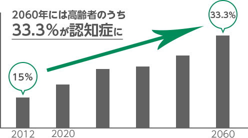
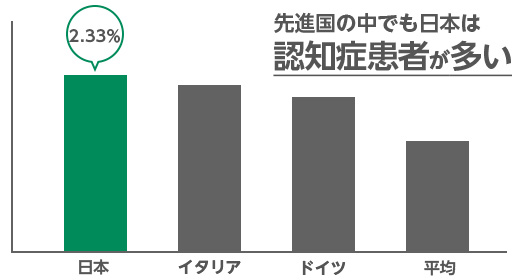

高齢社会において問題になる認知症・患者の増加
高齢社会に歯止めがかからない日本。
内閣府の発表したデータによると、2016年時点で総人口に占める65歳以上人口の割合（高齢化率）は27.3％。2065年には、約2.6人に1人が65歳以上、約4人に1人が75歳以上になると言われています。となると、ますます問題となっているのが、増え続ける認知症患者です。
日本における認知症患者増加の現状と今後についてご紹介します。
日本における認知症患者の数と今後
内閣府の発表したデータによると、2012年は認知症患者数が462万人と、65歳以上の高齢者の7人に1人（有病率15.0％）。2025年には約700万人、5人に1人になると見込まれています。人は生を受けて、死を迎えるものでそのサイクルは誰にも変えることはできません。
だからこそ、誰しもが老いを受け止め幸せのうちに安眠したい、家族に迷惑をかけずにお別れを言いたい、そう思うものではないでしょうか。
認知症になればそういった、ささやかな願いさえ叶わなくなってしまいます。
これは本人にとって辛いだけではなく、認知症患者に関わる家族にも影響を与えてしまうのです。
日本における認知症患者の数と今後
内閣府の発表したデータによると、2012年は認知症患者数が462万人と、65歳以上の高齢者の7人に1人（有病率15.0％）。2025年には約700万人、5人に1人になると見込まれています。人は生を受けて、死を迎えるものでそのサイクルは誰にも変えることはできません。
だからこそ、誰しもが老いを受け止め幸せのうちに安眠したい、家族に迷惑をかけずにお別れを言いたい、そう思うものではないでしょうか。
認知症になればそういった、ささやかな願いさえ叶わなくなってしまいます。
これは本人にとって辛いだけではなく、認知症患者に関わる家族にも影響を与えてしまうのです。
高齢化社会・認知症患者の増加は日本全体の問題

高齢化社会・認知症患者の増加の意味すること…。
それは日本経済を支えてきた1個人が生産をストップするだけではありません。
2012年の段階ですでに自律的な生活が難しいとされる認知症患者は日本に462万人。
このうち、精神科など医療機関に入院して治療を受けている人数は22万人ほどで、うち大半が数カ月で退院をして家庭や地域に戻っています。
不便を感じながら自宅で家族や施設で暮らしている高齢者がこれほどにも多いということです。
誰かの手を借りないと生活ができない状態であり、本来であれば働くなど生産的な活動が出来た人を巻き込んでしまうことになるのです。
厚生労働省「国民生活基礎調査」（平成25年）を参考にすると、2012年すでに300万人ほどの日本人が認知症患者の生活支援を何らか行いながら暮らしていて、
2025年にはそれが500万人以上、人口の約4.6％が認知症患者を家族に持つゆえ、生産性を発揮できない状態になると見込まれています。
国によって認知症患者の数に違いが？！一体どういうこと？
OECD（経済協力開発機構）によると、日本の有病率（病気を持っている人の割合）は先進国35ヵ国中2.33％、断トツで高いことが分かっています。

ランキングから見えて来た認知症にかかりやすい国・かかりにくい国。
「清潔で所得が高い国の都市部ではアルツハイマー率が高い」という共通点が見えて来たようです。
あまりにも清潔な状態だと微生物がいないため、体が怠けてしまい免疫に重要な「Ｔ細胞（Treg細胞）」ができにくくなってしまうのだとか。
Ｔ細胞が欠けた状態はアルツハイマー病患者の脳にみられる炎症反応との関連で注目されています。
アルツハイマー病の少ない国はフランス、インド、西アフリカとなっています。
フランスでは赤ワインを日常的に飲むこと、インドでは香辛料のターメリック（抗酸化作用が強い）を使用することなど食生活が影響していると考えられています。